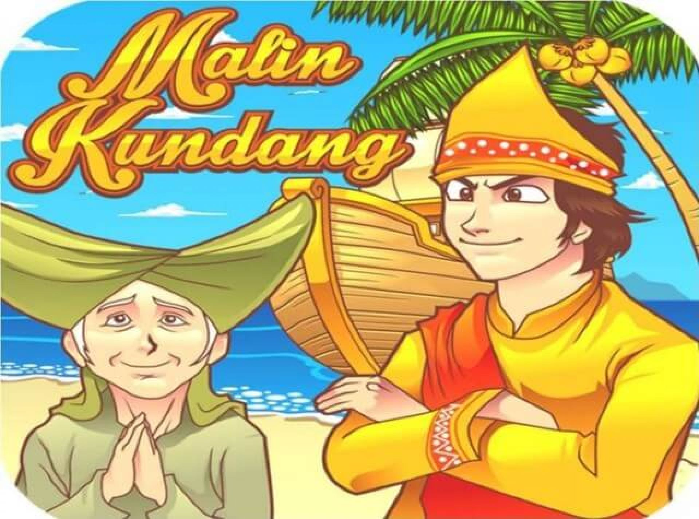

Cerita bercerita tentang seorang anak yang bernama Malin Kundang.
Malin hidup bersama ibunya di sebuah desa pesisir pantai Sumatera Barat.
Setelah beranjak dewasa, Malin merantau ke kota dengan tujuan agar mendapatkan kehidupan yang lebih baik.
Setelah beberapa tahun, Malin Kundang kini sudah sukses dan hidup berkecukupan di kota, bahkan dia sudah menikah dengan putri dari seorang bangsawan.

Setelah menikah, istri Malin Kundang yang sedang hamil menginginkan untuk berlibur ke pantai.
Karena sangat mencintai istrinya, Malin Kundang dan istrinya pergi berlibur ke pantai dan ternyata pantai tersebut adalah desa dimana ibu Malin Kundang tinggal.
Setibanya di pantai, ibu Malin Kundang yang sudah bertahun-tahun tidak bertemu anaknya, dan melihat dari kejauhan bahwa Malin Kundang datang, langsung menghampiri dan memeluknya.
Pada saat tersebut, Malin Kundang merasa malu dan tidak mau mengakui ibunya yang berasal dari desa.
Sempat terjadi perdebatan antara mereka, ibu Malin Kundang pun kemudian merasa sedih sekaligus marah anaknya kini tidak mengakui dirinya sebagai ibunya.
Ibu Malin Kundang kemudian berdoa dan mengutuk Malin Kundang menjadi batu.
Sembari menyesali perbuatannya yang sudah terlambat, dengan posisi bersujud Malin Kundang kini ternyata sudah berubah menjadi batu.